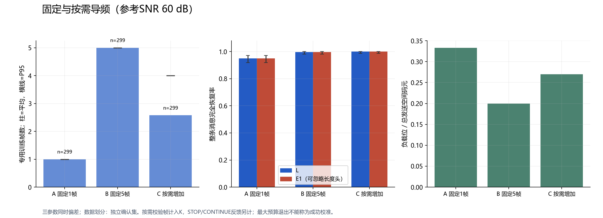

计算单元响应
同一个硅柱的长、宽，同时决定 x / y 两种偏振的振幅与相位。
周期单元 FDTD · 真实求解数据基于真实 FDTD 单元响应的三层近似传播仿真

设计 C 从原 25 种候选中选用 24 种。
每层 16 × 16 个硅柱。点击部件查看参数，或聚焦单层观察。

静态预览 · 正在加载真实 Blender 导出的模型…
左键拖动旋转 · 滚轮缩放 · 右键拖动平移 · 点击部件查看说明。触屏：先启用触控；单指旋转、双指缩放/平移。
默认允许单指滚动网页；启用后仅视口接管手势。光沿 +X 方向：L1 → L2 → L3 → 双偏振复场采样面。柱、基底各 0.5 mm；层入口位于 0、5、11 mm，采样面位于 16 mm。方向箭头不是求解得到的电磁场；采样面不是已实现的实体探测器。

三层设计从 25 种候选单元中选用 24 种几何。柱长、宽来自设计映射，柱高、基底、周期及材料参数含文献借用与假设，尚未经过加工验证。
旋转视角、聚焦与展开只影响展示。三维模型保留全部 768 个柱体的尺寸，收发参数在交互演示中单独设置。
几何与坐标来源同一个硅柱的长、宽，同时决定 x / y 两种偏振的振幅与相位。
周期单元 FDTD · 真实求解数据每一格选用真实几何。第二层旋转时，同时处理位置与偏振响应。
查表 + 近似传播 · 非整片全波固定同一份复场观测，改变候选参数，比较解码、误码和校准结果。
交互实算 · SHA-256 检查观测一致有效包中的错误位 / 总位数。匹配参数下恢复消息，CRC 通过。
分别只改一个参数，再恢复匹配。比较同一观测下的恢复结果。
80 个有效位的错误数变化。校准后仍错 1 位，CRC 未通过。
在固定器件与同一次接收观测上，比较训练数量、接收可靠性和未知参数方的消息恢复能力。
预先指定的三参数联合偏差、参考 SNR 60 dB 条件下，按需方案恢复 299/299 条消息，平均使用 2.58 个专用训练帧；E1 同样恢复 299/299。
| 方案 | 平均训练帧 | 接收方 L | 未知参数 E1 |
|---|---|---|---|
| 固定 1 帧 | 1.00 | 284 / 299 | 284 / 299 |
| 固定候选 5 帧 | 5.00 | 298 / 299 | 298 / 299 |
| 按需追加 | 2.58 | 299 / 299 | 299 / 299 |
按需方案的单侧 95% 恢复率下界为 99.003%，在上述条件下达到预设 99% 目标。固定 5 帧候选尚未通过同一置信门槛；固定最少导频仍未确认。

独立确认集 · 原始数据自动统计这里的 K 只计额外专用训练帧。固定长度头也是已知输入，K = 0 不代表没有公开训练信息。研究保留公开恢复成功、预算限制及原物理近似。
发送消息后，改变接收参数，比较同一观测下的解码结果。
默认案例 ECNU。发送后，后续参数对比始终使用同一份观测。
偏振为线偏振方向；仅第二层绕中心旋转。d₂₃ 从第二层入口面量至第三层入口面，包含前层 1 mm 厚度；对应空气间隙为 d₂₃ − 1 mm。
生成的观测保存在本页；可导出文件留存。改变接收参数不会重新发送。
局部校准窗口 ±3° / ±3° / ±0.3 mm；不会获得原文或真实密钥。
尚未发送接收端不会重新生成观测。发送并接收后显示结果。
| 操作 | α / ° | θ / ° | d₂₃ / mm | CRC | BER | 实际解码 |
|---|---|---|---|---|---|---|
| 尚未接收 | ||||||
本模式读取随包保存的案例结果，不实时运行传播或 FDTD，也不接受任意参数滑动。
比较接收可靠性、训练开销与未知参数方的恢复能力。
请检查网络或通过项目本地 HTTP 入口打开。本页不会用其他条件替代缺失数据。
点击或用键盘选中实测点查看详情。误差线为点态双侧 95% 精确置信区间；连线仅连接已测点，不代表插值。
所选 K 的中位绝对误差；未估计参数的方法显示“不适用”。
预先指定的联合偏差、参考 SNR 60 dB；同一组 299 个独立确认会话。
曲线误差线为双侧 95% 区间；99% 目标另用预先约定的单侧下界判定。
校验帧计入开销；5 个数据帧另计。按需方案的反馈成本也保留。
流程为协议示意，不是逐会话动画。达到最大预算仍未满足停止条件的情况保留。按需方案使用独立研究算法，没有替换原“交互演示”的校准程序。
K 是额外发送的完整训练帧数，每帧 16 个已知 BPSK 码元。8192 个复场测量分量不是 8192 次发送。固定 4 字节消息还公开一帧长度头，K=0 不等于没有已知输入。
完整包正确要求长度头、负载和 CRC 全部逐位一致；负载 BER 只统计 32 位消息。每个会话计一个样本，同一会话的多帧不增加独立样本量。验证集只能筛选候选；确认集用于指定条件的 99% 目标。
参考 SNR 使用固定公开模型平均接收功率，复噪声实、虚部独立且等方差，不逐帧归一化。活动偏差均匀分布于偏振 ±2°、层转角 ±2°、L₂–L₃ 距离 ±0.2 mm；这是研究预定范围。
本页是已归档数据的交互查看，不是实时 FDTD。模型仍含文献借用参数，并假设获得双偏振振幅和相位。恢复测试成功与失败均保留；经验恢复率不是信息论泄漏量，CRC 也不证明保密性。
单元 FDTD 和系统近似传播分别标注。点击图表可放大查看。
文献参数假设模型 · 0.7 THz · 三层各 16 × 16 单元 · 归档库 27 种几何 / 54 条响应 · 候选库 25 种，当前设计实际选用 24 种几何
实际优化设计 C。每格代表一个真实硅柱几何，同时决定两种偏振的振幅与相位。以下为已保存计算结果，不是整片三层 FDTD。
原始 FDTD 工程保留于项目本机，未上传。网站提供单元响应、复场观测及来源校验；图表不能替代原始工程检查。
记录已完成的检查、误差表现和模型限制。
真实 FDTD 单元响应已进入三层模型；标称文字收发、同观测参数对比和公开导频校准已有可重复结果。
27 种归档几何不代表连续尺寸域都已可靠覆盖。插值、局部耦合和部分误差恢复仍存在失败项。
偏振初值误差为 2° 时，公开导频校准把错误从 15/80 减少到 1/80，仍未通过 CRC。另有六个近邻错参数案例在校准后恢复了消息。
当前 0.7 THz 模型的公开候选遍历与连续参数搜索均有成功恢复记录。当前公开模型下，三参数组合尚不能保证消息保密。
CRC 用于检错；三个连续参数也不能按小数位数直接换算成密钥位数。
下载当前攻击原始记录 ↓另保留 历史 532 nm 模型记录，二者不是同一个模型。